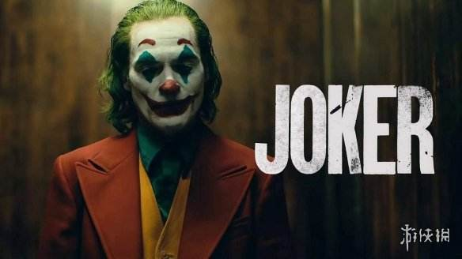
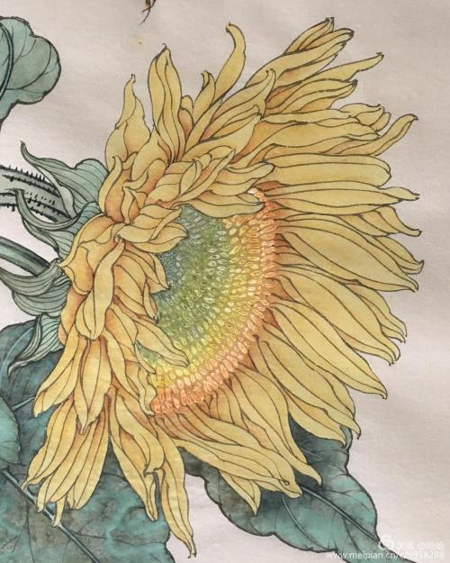

电影频道精选小丑(JOKER)
电影《小丑》以同名DC漫画角色为基础，由华纳兄弟影业公司发行，计划于2019年10月4日上映。本片的故事将独立于DCEU之外，故事背景设置在20世纪80年代，讲述了一位生活陷入困境的脱口秀喜剧演员渐渐走向精神的崩溃，在哥谭市开始了疯狂的犯罪生涯，最终成为了蝙蝠侠的宿敌“小丑”的故事。本片由《宿醉》的导演托德菲利普斯执导，他与编剧斯科特西尔弗一起撰写了编剧。杰昆菲尼克斯本片中饰演主人公“小丑”，其他的主演包括罗伯特德尼罗、莎姬贝兹、马克马龙等。 想了解更多请进入电影频道观看 |
音乐频道精选最佳损友
《最佳损友》出自于陈奕迅专辑《U 87》，这张专辑的主题是探究人生，希望带出人生是有喜有悲，勿因挫折而自寻短见的讯息，其中不少新歌是他对家庭、事业及人生的写照。 《最佳损友》是Eason继一曲《夕阳无限好》后再与Eric Kwok 合作，黄伟文填词。找了和杨千嬅同年同月同日生的Eric Kwok来作曲编曲，又找了杨千嬅的老友陈奕迅来演唱。做这首歌当天，Eric就让杨千嬅一定要好好听。 想了解更多请进入音乐频道观看 |
图片频道精选 |